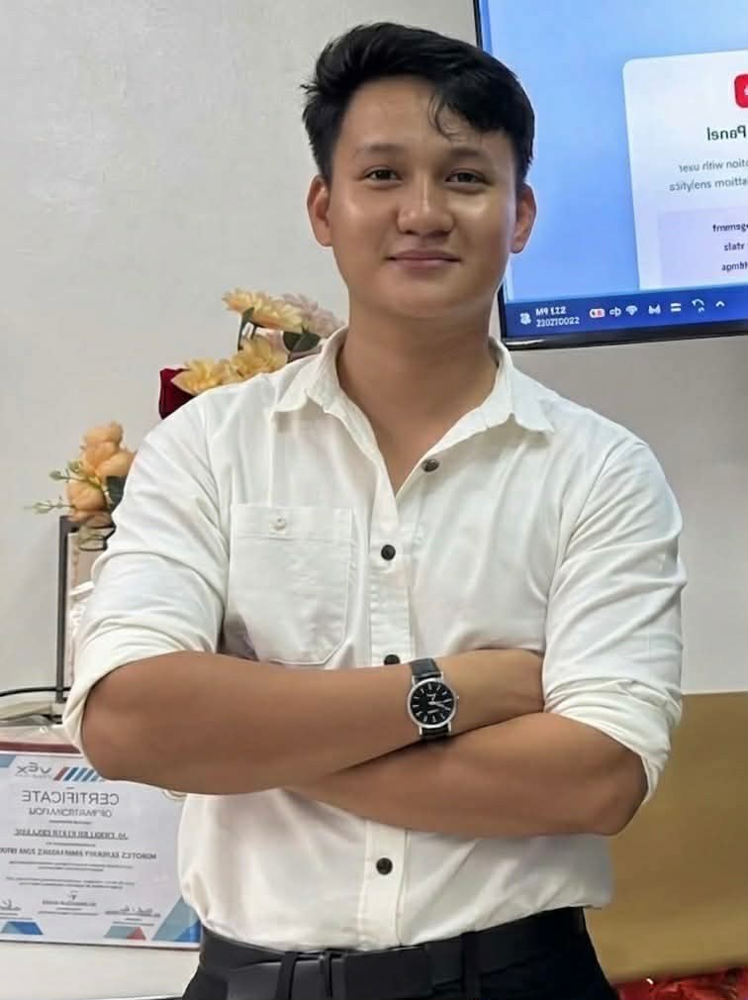

Anjo Abella Fernandez
Fourth-year Bachelor of Science in Information Technology student at JH Cerilles State College, from Pagadian City, Zamboanga del Sur, Philippines.
BS Information Technology · Fourth Year
About Me
A short introduction
My name is Anjo Abella Fernandez, and I am from San Pedro, Pagadian City, Zamboanga del Sur, Philippines.
I am currently a fourth-year Bachelor of Science in Information Technology student at JH Cerilles State College. I am continuing to build my knowledge and practical abilities in information technology.
Outside my studies, I enjoy playing the guitar and fixing things. I like hands-on activities that let me explore, understand, and solve practical problems.
Educational Background
My academic journey
JH Cerilles State College
Bachelor of Science in Information Technology (BSIT) · Fourth Year
Zamboanga del Sur School of Arts and Trades (ZSSAT)
Secondary education
San Pedro Central Elementary School
Elementary education
Leadership Experience
School involvement
Former SSG Police Officer · ZSSAT
Served as an SSG Police Officer at Zamboanga del Sur School of Arts and Trades.
Interests & Hobbies
Things I enjoy doing